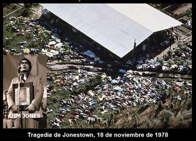

A 47 años de la tragedia que mostró hasta dónde puede llegar la locura colectiva cuando se disfraza de fe.
El 18 de noviembre de 1978, el mundo fue testigo de una de las páginas más espantosas de la historia humana: la tragedia de Jonestown, en Guyana, donde 918 personas —entre ellas casi 300 niños— fallecieron envenenadas por orden de su líder religioso, el reverendo Jim Jones, pastor cristiano estadounidense que había fundado en los años cincuenta en Indianápolis su «Templo del Pueblo de los Discípulos de Cristo», y había prometido a sus seguidores construir una sociedad sin r4cismo, sin pobreza y sin pecado. Pero lo que terminó construyendo fue un infierno tropical gobernado por la paranoia, la manipulación psicológica y el culto enfermizo a su propia figura.


James Warren Jones (1931-1978), más conocido como Jim Jones, no fue un loc0 solitario: fue el producto más extremo de una mentalidad religiosa que exige obediencia ciega, sacrificio, y renuncia al pensamiento crítico. Su vida, marcada desde la infancia por una mórbida fascinación por la muerte y el poder, se desarrolló en el entorno perfecto para incubar un m0nstruo: una sociedad que venera al predicador carismático, que confunde la emoción con la verdad, y que enseña que la fe es una virtud, incluso aunque contradiga la razón. Desde sus primeras actividades como pastor metodista hasta la fundación de su iglesia, Jones supo combinar los símbolos del cristianismo con la retórica comunista y la teatralidad de un redentor mesiánico. Lo peor de todo es que miles lo creyeron.
A mediados de los años setenta, Jones trasladó a casi novecientas personas desde California hasta la selva de Guyana en América del Sur, para fundar su comunidad ideal: Jonestown, una «tierra prometida» donde, según él, los suyos podrían escapar de la corrupción capitalista y esperar el fin del mundo. Pero allí, aislados de toda influencia externa y vigilados por guardias armados, sus seguidores fueron sometidos a jornadas extenuantes, castigos físicos, humillaciones y un adoctrinamiento constante. Así, Jones había logrado lo que toda religión autoritaria busca: el control total de las conciencias.
Pero el delirio alcanzó su punto máximo cuando Jones comenzó a preparar a su comunidad para lo que él llamaba «las noches blancas»: simulacros de su1cid1o colectivo, ensayos de la muerte como acto de fe. Y finalmente, tras el asesinato del congresista estadounidense Leo Ryan —quien había viajado a Guyana para investigar las denuncias de abuso y secuestro—, Jones dio la orden definitiva: todos debían «partir juntos». Entonces los padres obligaron a sus hijos a beber una combinación de Kool-Aid (mezcla en polvo saborizada para bebidas) con cianuro, y quienes se resistieron fueron forzados o asesinados. 918 muertos en nombre de un dios inventado y de un líder trastornado.
Pero lo más estremecedor de Jonestown no es sólo la cantidad de fallecidos, sino la docilidad con que la gente se entregó a su verdugo. Esto nos obliga a preguntarnos cómo es posible que seres humanos racionales, con familias, empleos y educación, lleguen a obedecer hasta tal extremo. Y la respuesta, por dolorosa que sea, está en el poder corrosivo del pensamiento religioso combinado con el autoritarismo y la desesperación. La religión, al exigir fe incondicional y sumisión a la «voluntad divina», prepara el terreno para que surjan figuras como Jim Jones, capaces de sustituir la voz de «Dios» con la suya propia.
Lo que ocurrió en Jonestown aquel lejano 18 de noviembre, fue una liturgia de muerte, una misa envenenada donde el dogma sustituyó a la razón y la obediencia destruyó la dignidad humana. Las grabaciones de aquel día —las tristemente célebres «cintas de la muerte»— revelan a adultos tratando de convencer a otros de morir «en paz», mientras los niños lloran aterrados. Si eso no es la demostración más clara del poder destructivo de la fe ciega, ¿qué lo sería?
Hoy, a 47 años de la tragedia, Jonestown sigue siendo un espejo que nos obliga a mirar la cara más oscura de las religiones y de toda ideología que exige sumisión total. Jim Jones fue un predicador más entre millones, pero su historia muestra lo que puede ocurrir cuando el culto a lo sagrado reemplaza el pensamiento libre. Ninguna promesa de redención justifica que un ser humano renuncie a su razón, ni que se arrodille ante otro.
Recordar Jonestown no es sólo honrar a las víctimas, sino recordar el precio del fanatismo. Y también reafirmar algo esencial: el pensamiento crítico, la duda y la libertad de conciencia no son lujos intelectuales, sino las únicas vacunas que tiene la humanidad contra la locura colectiva que, en 1978, hizo beber cianuro a casi mil personas… creyendo que obedecían a «Dios».
[Godless Freeman]
Comentarios
Comments powered by Disqus